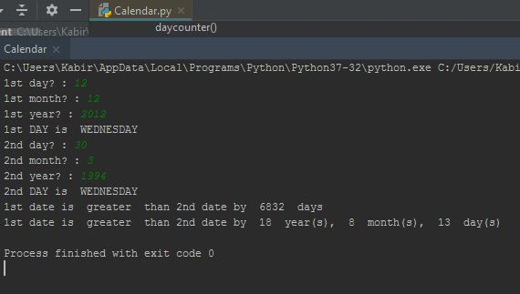

<h1 style="padding-left:4%;padding-top: 2%;padding-bottom: 2%;padding-right: 10%;border-bottom: 1px solid #BDBDBD;">


Age Counter Using Python 


</h1>


A Python based program


<h2><a href="https://drive.google.com/open?id=1oyH-a7y6QBRsplPqQ751zNozOSU_6sI6" target="_blank"> Process </a></h2>




